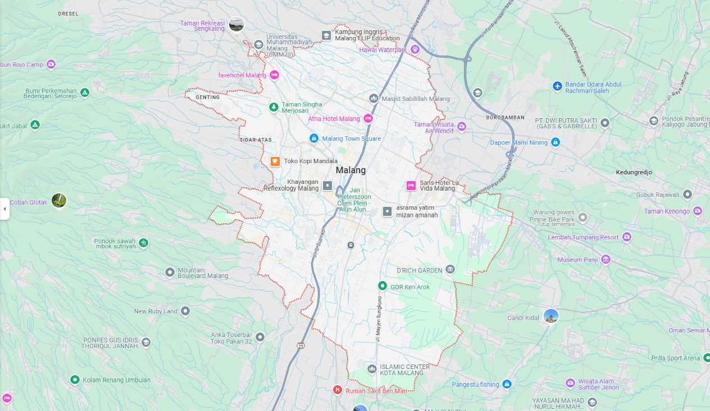

Sejarah
Malang adalah salah satu kota tertua di Jawa Timur yang memiliki sejarah panjang
sejak era Kerajaan Kanjuruhan pada abad ke-8. Pada masa Majapahit, Malang
menjadi bagian penting dalam ekspansi kerajaan, dengan beberapa peninggalan
sejarah seperti Candi Singosari yang terkait dengan Kerajaan Singasari. Saat era
kolonial Belanda, Malang berkembang pesat sebagai kota peristirahatan bagi orang-
orang Eropa karena iklimnya yang sejuk dan strategis. Pembangunan infrastruktur
seperti jalur kereta api dan kawasan permukiman bergaya kolonial mulai marak,
menjadikan Malang sebagai pusat ekonomi dan budaya yang penting di Jawa Timur.
Salah satu kawasan bersejarah yang masih terjaga hingga kini adalah Kayutangan,
yang dahulu merupakan pusat perdagangan dan administratif pada masa kolonial.
Kawasan ini dipenuhi bangunan bergaya art deco dan kolonial yang masih berdiri
megah, mencerminkan kejayaan masa lalu Malang. Saat ini, Kayutangan Heritage
menjadi salah satu destinasi wisata unggulan yang menawarkan suasana klasik
dengan lampu-lampu temaram di malam hari serta kafe-kafe yang menghidupkan
kembali atmosfer tempo dulu. Keberadaan Kayutangan sebagai saksi bisu perjalanan
sejarah Malang menjadikannya ikon yang memperkaya identitas budaya kota ini.
Geografis

Malang terletak di bagian selatan Provinsi Jawa Timur, Indonesia, dengan koordinat
sekitar 7°58' LS dan 112°37' BT. Kota ini berada di dataran tinggi dengan ketinggian
sekitar 440-667 meter di atas permukaan laut, sehingga memiliki iklim yang sejuk
dibandingkan daerah pesisir. Malang dikelilingi oleh pegunungan, seperti Gunung
Arjuno di sebelah utara, Gunung Semeru di sebelah timur, serta Pegunungan Kawi
dan Gunung Panderman di sebelah barat.
Secara administratif, Malang terdiri dari Kota Malang, Kabupaten Malang, dan Kota
Batu yang membentuk kawasan Malang Raya. Wilayahnya dilewati beberapa sungai
besar, seperti Sungai Brantas yang menjadi sumber air utama bagi masyarakat.
Keberadaan pegunungan dan sungai ini menjadikan Malang subur dan cocok untuk
pertanian, terutama dalam produksi apel, sayuran, dan tanaman hias. Selain itu,
kondisi geografisnya yang strategis menjadikan Malang sebagai pusat pendidikan,
ekonomi, dan pariwisata di Jawa Timur.
Wisata
Malang dikenal sebagai salah satu destinasi wisata favorit di Jawa Timur yang
menawarkan keindahan alam, sejarah, dan berbagai tempat rekreasi menarik.
Dengan udara yang sejuk serta beragam atraksi yang bisa dinikmati, kota ini menjadi
tujuan wisata yang cocok bagi segala usia. Berikut adalah tiga tempat wisata
di Malang yang patut dikunjungi.
Kampung Warna warni
Kawasan pemukiman yang disulap menjadi destinasi wisata Instagramable dengan
rumah-rumah yang dicat warna-warni dan jembatan kaca sebagai daya tarik utama.
Jatim Park
Taman rekreasi dan edukasi di Kota Batu yang memiliki berbagai wahana menarik,
seperti Jatim Park 1 dengan atraksi permainan, Jatim Park 2 yang berfokus pada
edukasi satwa, dan Jatim Park 3 dengan tema dinosaurus serta dunia fantasi.
Gunung Bromo

Destinasi wisata alam ikonik yang dapat diakses dari Malang, menawarkan
pemandangan matahari terbit yang spektakuler, lautan pasir, serta kawah aktif
yang menjadi daya tarik utama bagi wisatawan domestik maupun mancanegara.
Kuliner Khas Malang
Malang tidak hanya terkenal dengan wisata alam dan budayanya, tetapi juga memiliki berbagai kuliner lezat yang wajib dicoba. Berikut adalah tiga makanan khas Malang yang populer:
Bakso Malang
Bakso Malang terkenal dengan ukuran bakso yang besar dan kenyal, disajikan dengan mie, tahu, siomay, dan pangsit. Kuahnya yang gurih dan pedas membuatnya semakin nikmat.
Orem-Orem
Orem-orem adalah makanan khas Malang yang terbuat dari irisan ketupat, tahu, tempe, dan daging ayam atau sapi yang disiram dengan kuah santan kental dan bumbu rempah yang kaya rasa.
Cwie mie
Cwie mie merupakan makanan khas Malang yang terbuat dari mie tipis dan gepeng.
Tentang Saya
Dicky
Saya seorang Mahasiswa.